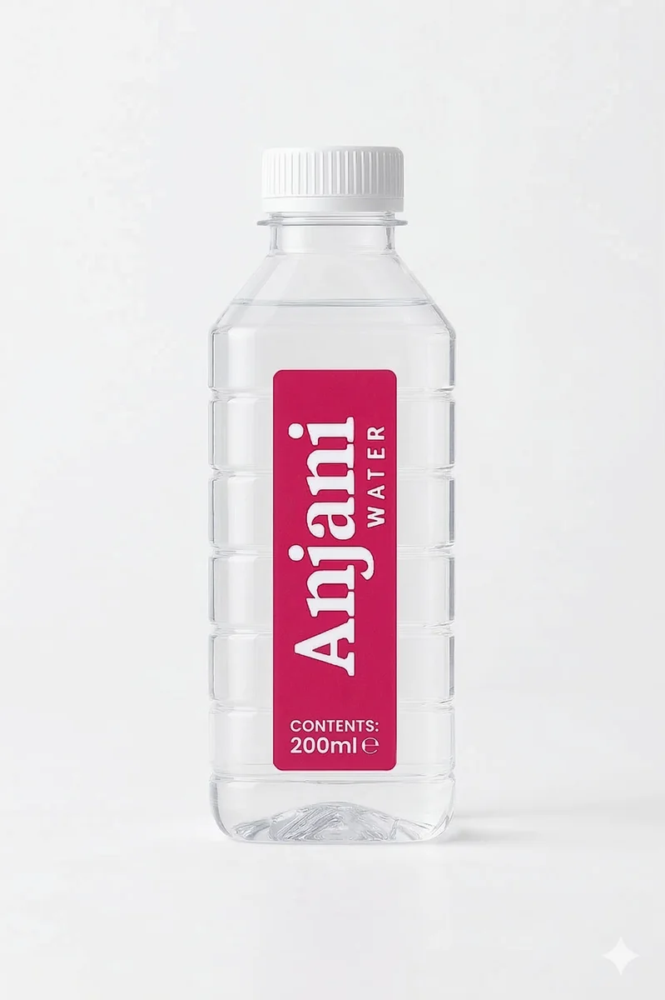

💍
Marriage & Wedding
Water bottle arrangements for wedding ceremonies, guest dining and large marriage gatherings.
Planning a marriage, reception or large gathering? Arrange sealed 200ml packaged drinking water bottles for your guests with Anjani Water. Share your event date, estimated quantity and venue to request a bulk supply quote.

The 200ml bottle format is a practical option for wedding meals, receptions, catering counters and functions where organisers want individual sealed bottles for guests.
Brand availability, customisation, pricing, minimum quantity and delivery schedule are confirmed at the time of enquiry.
Start an Order Enquiry →Tell us what kind of function you are arranging. We can discuss the required quantity, product option and delivery location.
Water bottle arrangements for wedding ceremonies, guest dining and large marriage gatherings.
Individual bottles for reception dinners, engagement functions and family celebrations.
Bulk water requirements coordinated with catering teams and event service counters.
Enquiries from party plots, banquet halls and venues hosting weddings and social functions.
Supply enquiries for Haldi, Mehendi, Sangeet and other pre-wedding celebrations.
Bulk requirements for religious gatherings, family events and other celebrations.
We are based in Vadodara and invite event organisers to check delivery availability for their venue. Our local service areas include:
For venues outside these areas, share the complete location so we can confirm whether delivery can be arranged.
Send your event date, venue or area, estimated guest count and required delivery time.
Discuss available 200ml brand options, quantity, current rate and delivery feasibility.
Once details are confirmed, coordinate the order and delivery timing with our team.
Yes. Contact Anjani Water with your event date, venue, estimated quantity and preferred brand. We will confirm the available options and quote.
Share your expected guest count and event details. We will discuss the required quantity, stock and delivery schedule with you.
You can ask about Anjani, Bailley, Bisleri and Clear 200ml options. Current brand availability and rates are confirmed when you enquire.
We accept enquiries from caterers, party plots, banquet venues and event organisers for bulk packaged drinking water requirements in and around Vadodara.
Contact us as early as possible with the event date and estimated quantity so stock and delivery arrangements can be checked in advance.
Ask us separately about customised label options, design requirements, lead time and minimum quantity. These details need confirmation before the order is accepted.
Send us your event date, venue and estimated quantity. We’ll help you check the suitable supply option for your function.